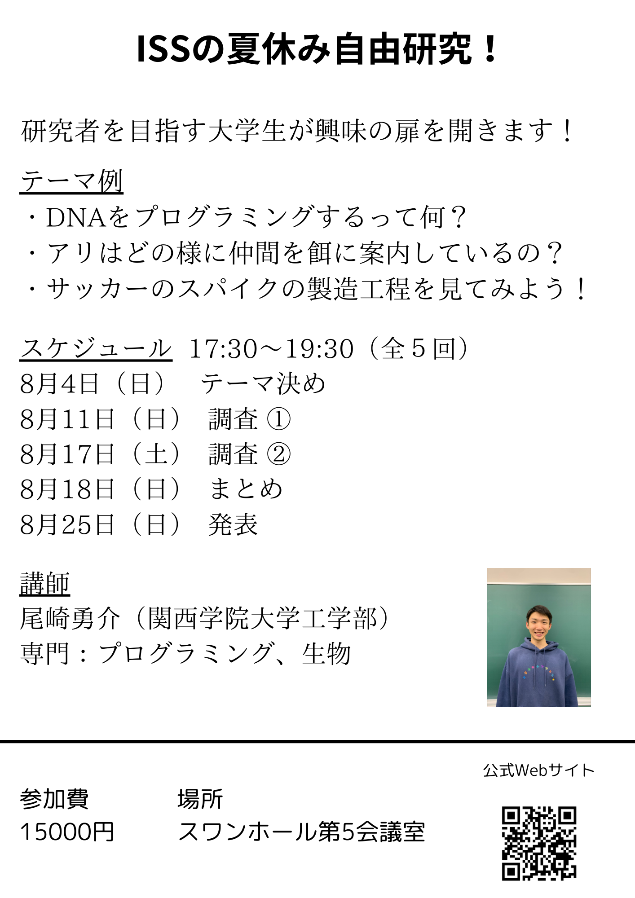

私たちの団体について
伊丹サイエンススクールは、子どもたちがより広い世界へと飛び立つための興味の扉を開く場所です！子どもたちが学ぶことの楽しさを実感し、自信を持って未来に挑戦できるような環境を提供します！
イベント情報
夏休み自由研究
夏休み期間中には「自由研究会」を開催いたします。この会では、子どもたちが興味を持ったテーマについて深く掘り下げ、自分自身の手で研究を進める経験を積むことができます。科学の楽しさを体験しながら、夏休みの自由研究を完成させる絶好の機会となることでしょう。
テーマ例
テーマが決まっていない場合は一緒に面白いテーマを考えます！
決まっている場合は調査や実験の方法、まとめ方などをアドバイスします！

- DNAをプログラミングするって何？
- アリはどの様に仲間を餌に案内しているの？
- サッカーのスパイクの製造工程を見てみよう！
スケジュール
- 8月4日（日） テーマ決め
- 8月11日（日） 調査 ①
- 8月17日（土） 調査 ②
- 8月18日（日） まとめ
- 8月25日（日） 発表